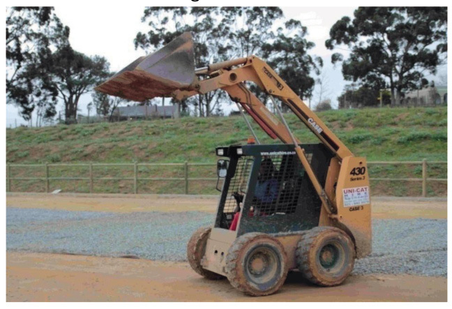

Mini-pat mechanical systems and control
Who can help Maria to get started? In other words, what type of people should she meet to help her with her plans?
Which abilities and skills would Maria need to design and build houses?
What kinds of equipment will her company need to build houses?

Read the previous page carefully. Write the design brief by copying this sentence and completing it in the space below:
I am going to help my group design and make a . . . . . . . . that will . . . . . . . . (1)
Look at the photo of a tip truck on the next page. The door at the back opens by itself when the load bed lifts up. It has no bolts or locks to open and close it.
Write down the specifications.(2)
Write down the constraints. Remember that the constraints are the tools, materials and time that you have available to make the model.(2)
Form teams of four and compare your specifications. Total [5]

Take care
The cardboard must not get wet, otherwise it will become soft and weak.
Should the driven piston under the load bed be wider than the driver piston, the same size, or narrower? Give a reason for your answer.
Now adjust your system so that the driver piston moves the driven piston. Make sure that the driven piston does not pop out of its cylinder.
Make sure the cardboard at the back of the box does not get wet.
The back of the box has to be strong and stiff. Why?
Complete the drawing on the right. The green lines show you where the driven piston is when the cardboard is down. Now draw the piston again in pencil, on this same drawing. Show its position when it has pushed the cardboard up.
Look at the position of the hinge around which the door swings. Why is the hinge placed there? Why does the door have arms that go to the front of the hinge?
[3]
Look at the chains going down from the arms of the door to the truck body. What is the purpose of these chains?
[3]
Make a drawing of what the load bed and the door will look like when the load bed is flat. In other words, what does the load bed look like when the truck is travelling and the load bed is not tilted up?

Look at the picture below of a tip truck. Pay special attention to the door at the back of the load bed.
Will the door of this load bed keep the sand inside when the truck is driving? Explain your answer. You can also use a drawing to explain your answer.
[3]
Total [9]
Make a model of the door on your box to show your design. Then make arough sketch of your design for the door below.
Total [5]
Change the design of the switch so that it is "normally closed". The weight of the truck bed should keep the switch open or "off", so that it cannot complete the circuit. When the bed lifts up, the switch must close to go "on" and complete the circuit. This will make the beeper go off and make the LED light shine.
-
Draw your idea for a normally closed switch here. Show the load bed in the down-position, holding the switch open. You don't have to draw the whole truck, just the part that pushes the switch down.
How to make wheels and a truck body
The sketches below show how to make wheels from plastic bottle tops, and how to attach the wheels to the box that represents the truck body.
Remember that the back of the truck body must have enough room for the hydraulic syringe to move. The body should also have room for the hinge.
-
Look at the wheels of the truck in Figure 3. Trucks that carry heavy loads must have wheels that are strong, but also wide. Why do the tyres have to be wide?
[2]
-
How can you make sure that the wheels can turn freely?
[3]
Total [5]
-
The truck should have enough room for the hydraulic syringe to move. It should also have room for the hinge. Make a sketch of the box you will use for the truck body, and show the syringe and the hinges on this sketch.
Week 2
Design your tip truck (30 minutes)
You will work as a team of three or four to design and make different parts that will fit exactly together to make a model tip truck that works. Each person will make only one part.
Remind yourself why you are making this model, and look again at the specifications.
Design all the parts of the tip truck
Draw your designs on the following pages. Give a title for each drawing, to show what the drawing is about. Also use labels to show what the different parts of a drawing are.
Use your ruler and show measurements of the parts on your drawing. The measurements are important because the part or parts you make have to fit into the parts that other people are making.
If you are making the warning circuit, draw a circuit diagram and also draw the real circuit. You have to plan your circuit so that the switch will be underneath the load bed, and you have somewhere to hide the battery.
If you get a better idea, don't throw away the first sketches. Keep all your old sketches and notes together. Your teacher will assess you on how much your ideas have improved. Use loose pages if you need more space to draw better ideas.
Total [6]
Team design meeting (30 minutes)
You will work in teams of three or four. Each person will make only certain parts of the tip truck, and in the end all the parts have to fit together.
Divide the work amongst yourselves. For example, give each person one of the following parts to make:
- the load bed and the truck body, the hinges between them, and the hydraulic system;
- the door of the load bed and the cabin of the truck; or
- the switch for the warning beeper and light, and the truck wheels and axles.
As a team, you need to check the designs of the different parts to see if everything will fit together. Only then can you start making the different parts individually. You will have to check the measurements of all the parts on your designs to make sure that they will fit together. If they won't fit you will have to adapt the designs to make them fit.
Individual work: get ready to make your parts
Complete the following sentences individually:
-
I am going to make . . . .
-
I will need the following materials:
There are constraints on the materials that you can use. You can only use materials that you can find.
[3]
-
I will need the following tools:
There are constraints on the tools that you can use. You can only use tools that you can find, and that are safe for you to work with.
[3]
Total [6]
Make your part or parts (2 × 30 min = 60 minutes)
Begin work on your part, but keep checking with the others in the group that the parts will fit together. Make new sketches if necessary. Total [12]
Week 3
Assemble the model tip truck (2 × 30 min = 60 minutes)
Now bring all the parts together to make the whole truck. Be careful when you assemble the truck. Some parts might not fit exactly. Don't force them together as this could break both parts. It will be easier to simply alter a part that doesn't fit by cutting it carefully, or adding a small piece with glue.
The picture on the right is an example of a tip truck someone made. Your model will look different to this and could work better than this one. Total [12]

Presenting your project (2 × 30 min = 60 minutes)
Each team will have five minutes to explain their design and show their drawings to the rest of the class.
Each team member should present the best sketches they have made of a part, or parts.
Three new drawings should also be made of the completed truck. You need to decide as a group who is going to make each of these drawings:
- An artistic three-dimensional drawing showing the completed tip truck from the front, with the load bed tilted up.
- An artistic three-dimensional drawing showing the completed tip truck from the back, with the load bed tilted up.
- An orthographic drawing showing the front, top and side views of the completed tip truck. This is called an orthographic first-angle projection.
The illustration and drawing below shows how the model is projected onto the paper, in order to draw an "orthographic first-angle projection".

Look at the scissors in the figure. If you cut the box open, the sides will fall down and lie flat on the table. Then you will have the "orthographic first-angle projection".
On the next page, there is an exercise in completing an orthographic first-angle projection of the truck.
The side view has been drawn for you. Use the red projection lines to complete the top view of the truck. Then use the blue lines to complete the front view. Finally add the labels for "front view", "top view" and "side view" to your drawing.
Total [10]

Evaluate your model
When you evaluate a model, you ask questions about it. Most of the questions relate to the specifications. Turn back and read the specifications again.
- Does the truck have four wheels that look wide enough to carry a heavy load?
- Does the truck have a cabin for the driver?
- Can the truck carry a tablespoon of sand?
- Does the load bed lift up with a hydraulic system? What is the highest angle it can reach?
- Does the load slide out of a gate at the back of the load bed?
- Does a beeper sound or does an LED come on when the load bed goes up?
- Does the hydraulic system give you a mechanical advantage?
- In theory, what is the mechanical advantage of the system? The syringes have a lot of friction in them and so the real mechanical advantage is less than the theoretical advantage.
Next term
Enjoy your winter holidays! After the holidays, you will learn more about electrical circuits and parts that can be used in them.